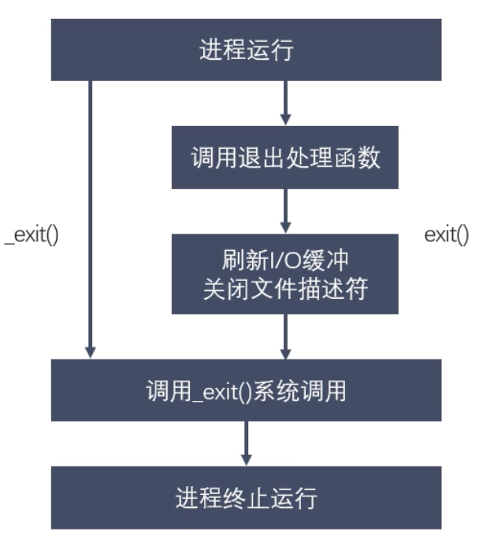

写在前面
本文是牛客网项目的学习笔记；
进程概述 这里使用了之前学习黑马时所记的学习笔记；
程序与进程 程序是静态的，进程是动态的。
单道、多道程序设计 单道：所有进程一个一个排队。
并行和并发 并行：同一时间有多条指令在多个处理器上同时执行。
并发：同一时刻只能有一条指令执行，但是多个进程指令被快速的轮换执行，导致宏观上有多个进程同时执行的效果。
举例说明：
并行：两个队列同时使用两台打印机
并发：两个队列交替使用一台打印机
MMU MMU是Memory Management Unit的缩写。中文名字是内存管理单元。是中央处理器CPU用来管理虚拟存储器、物理存储器的控制线路，同时也负责虚拟地址映射为物理地址。以及提供硬件机制的内存访问权限，用于多用户多进程操作系统。
映射物理内存，并不是全映射。只有用到的内存才会在物理内存上映射出来。内核空间只有一个。用户空间不同进程是不同的。
进程控制块PCB 每个进程在内核中都有一个PCB来维护进程相关的信息。Linux系统内核的进程控制块是task_struct结构体。重点掌握以下字段：
进程ID ：pid_t类型进程状态 ：初始化、就绪、运行、挂起、停止进程切换时需要保存和恢复的寄存器
描述虚拟地址空间的信息
当前工作目录 umask掩码，每个进程是不同的
文件描述符表 和信号相关的信息 用户ID和组ID
进程状态转换 进程状态反应进程执行过程中的变化。
三态模型：就绪、运行、阻塞
五态模型：新建、就绪、运行、阻塞、终止
ps aux / ajx
a：显示终端上的所有进程，包括其他用户的进程
u：显示进程的详细信息
x：显示没有控制终端的进程
j：列出与作业控制相关的信息
进程由进程号来标识，其类型为pid_t （整型），进程号的范围是0-32767。进程号总是唯一的，但是可以重用。
任何进程除了init进程外都是由另一个进程所创建，该进程称为被创建进程的父进程，对应进程号为父进程号（ppid）
进程组是一组进程的集合。有进程组号（pgid）默认情况下，当前进程号会当作进程组号。
1 2 3 pid_t getpdi(); pid_t getppid(); pid_t getpgid();
进程创建 1 2 3 4 5 6 7 8 9 10 11 12 13 14 15 16 17 18 19 #include<sys/types.h> #include<unistd.h> pid_t fork(); if和else外的代码父进程和子进程都会执行。 父子进程之间的关系： 区别： 1、fork函数的返回值不同 父进程中：>0 返回的是子进程的ID 子进程中：=0 2、PCB中的一些数据 当前的进程id、pid 当前的进程的父进程id、ppid 信号集 共同点： 某些状态下：子进程刚刚被创建出来，还没有执行任何写操作的时候 - 用户区中的数据 - 文件描述符表 父子进程变量是不是共享的？ 读时共享，写时复制
父子进程的虚拟地址空间情况 1 2 3 父子进程的内核空间中pid是不同的。 初始时父子进程的内容是相同的，对变量进行的修改是互不影响的。 写时拷贝。fork，资源的复制是在需要写入时才会进行的。
GDB多进程调试 1 2 3 4 5 6 7 8 9 set follow-fork-mode child # 设置跟踪子进程 show follow-fork-mode set detach-on-fork [on | off] 默认为on，表示调试当前进程的时候，其他的进程继续运行，如果为off，调试当前进程的时候，其他进程被gdb挂起 info inferiors # 查看调试的进程 inferior id # 切换当前调试的进程 detach inferiors id # 使进程脱离gdb的调试 注意：一定要在fork函数调用之前设置才有效
EXEC函数族 1 2 3 4 5 6 7 8 9 10 11 12 13 14 15 16 17 18 exec函数族的作用就是根据指定的文件名找到对应的可执行文件，并将它执行，所以当前进程的信息会被替换成可执行文件中的信息。这样的话，原有进程就没法继续往下执行了，因此通常在fork函数之后执行exec函数族。 执行成功之后不会返回，因为进程的代码段、数据段以及堆栈等信息都被新的内容所替代，只有当调用失败时才会返回-1，然后从原程序的调用点接着往下执行。 #include<unistd.h> int execl(const char *path, const char* arg, ...) 参数： - path：需要指定的执行文件的路径或者名称 a.out 推荐使用绝对路径 - arg：执行可执行文件所需要的参数列表 第一个参数一般没有什么作用，都是执行程序的名称，从第二个参数开始，就是参数列表，以null结尾 int execlp(const char *file, const char *arg, ...) 参数： - file：可执行文件名，会到环境变量（PATH）中去寻找可执行文件 int execve(const char *pathname, char *const argv[], char *const envp[]); l —— list ——命令行参数列表 p —— path —— 搜索file时使用path变量 v —— vector —— 使用命令行参数数组 e —— environment —— 使用环境变量数组，不使用进程原有的环境变量，设置新加载程序运行的环境变量。 只有execve是系统调用。其他五个函数都是调用execve。
进程退出、孤儿进程、僵尸进程 
1 2 3 4 5 6 7 8 9 10 11 12 13 14 15 16 17 18 19 20 21 22 23 24 25 26 27 28 29 30 31 32 #include<stdlib.h> void exit(int status); #include<unistd.h> void _exit(int status); exit会自动刷新缓冲区并关闭文件描述符 父进程运行结束，但子进程还在运行，这样的进程称为孤儿进程。 每当出现孤儿进程时，内核就把孤儿进程父进程设置为init，而init进程会循环的wait它的已经退出的子进程，用于回收子进程的资源。 因此孤儿进程并不会有什么危害。 /*每个进程结束后，用户区的数据由进程自身释放，但是内核区的PCB数据需要父进程释放。 进程终止时，如果父进程没有对子进程进行回收，导致子进程残留资源在内核中，就会出现僵尸进程。 僵尸进程并不能被kill -9杀死，因为本身就是死的。 僵尸进程的进程号会被一直占用，因此如果僵尸进程太多的话，就会导致没有可用的进程号，这是僵尸进程的危害。 僵尸进程的解决： 将父进程也杀死 */ pid_t pid; pid = fork(); if (pid == 0) { // son sleep(9); printf("I am son, I am going to die\n"); } else if (pid > 0) { while (1) { printf("I am parent\n"); sleep(1); } } else { perror("fork()"); } // 子进程已经终止，但是父进程没有终止
wait和waitpid 1 2 3 4 5 6 7 8 9 10 11 12 13 14 15 16 17 18 19 20 21 22 23 24 25 26 27 28 29 30 31 32 33 34 35 36 37 38 39 40 /*通过wait和waitpid彻底清除掉子进程 wait会阻塞，waitpid可以设置不阻塞，并且可以指定回收哪个子进程。 一次wait或者waitpid只能清理一个子进程。清理多个子进程应该使用循环。 */ #include <sys/types.h> #include <sys/wait.h> pid_t wait(int *status); /* 功能： 等待任意一个子进程结束，如果任意一个子进程结束了，此函数会回收该子进程的资源。 参数： status : 进程退出时的状态信息。 返回值： 成功：已经结束子进程的进程号 失败： -1 */ #include <sys/types.h> #include <sys/wait.h> pid_t waitpid(pid_t pid, int *status, int options); /* 功能： 等待子进程终止，如果子进程终止了，此函数会回收子进程的资源。 参数： pid : 参数 pid 的值有以下几种类型： pid > 0 等待进程 ID 等于 pid 的子进程。 pid = 0 等待同一个进程组中的任何子进程，如果子进程已经加入了别的进程组，waitpid 不会等待它。 pid = -1 等待任一子进程，此时 waitpid 和 wait 作用一样。 pid < -1 等待指定进程组中的任何子进程，这个进程组的 ID 等于 pid 的绝对值。 status : 进程退出时的状态信息。和 wait() 用法一样。 options : options 提供了一些额外的选项来控制 waitpid()。 0：同 wait()，阻塞父进程，等待子进程退出。 WNOHANG：没有任何已经结束的子进程，则立即返回。 WUNTRACED：如果子进程暂停了则此函数马上返回，并且不予以理会子进程的结束状态。（由于涉及到一些跟踪调试方面的知识，加之极少用到） 返回值： waitpid() 的返回值比 wait() 稍微复杂一些，一共有 3 种情况： 1) 当正常返回的时候，waitpid() 返回收集到的已经回收子进程的进程号； 2) 如果设置了选项 WNOHANG，而调用中 waitpid() 发现没有已退出的子进程可等待，则返回 0； 3) 如果调用中出错，则返回-1，这时 errno 会被设置成相应的值以指示错误所在，如：当 pid 所对应的子进程不存在，或此进程存在，但不是调用进程的子进程，waitpid() 就会出错返回，这时 errno 被设置为 ECHILD； */
进程通信 1 2 3 4 5 6 7 8 9 10 11 12 13 14 15 /* 进程是一个独立的资源分配单元，不同进程（这里所说的进程通常指的是用户进程）之间的资源是独立的，没有关联，不能在一个进程中直接访问另一个进程的资源。 但是，进程不是孤立的，不同的进程需要进行信息的交互和状态的传递等，因此需要进程间通信( IPC：Inter Processes Communication )。 进程间通信的目的： 数据传输：一个进程需要将它的数据发送给另一个进程。 通知事件：一个进程需要向另一个或一组进程发送消息，通知它（它们）发生了某种事件（如进程终止时要通知父进程）。 资源共享：多个进程之间共享同样的资源。为了做到这一点，需要内核提供互斥和同步机制。 进程控制：有些进程希望完全控制另一个进程的执行（如 Debug 进程），此时控制进程希望能够拦截另一个进程的所有陷入和异常，并能够及时知道它的状态改变。 进程通信的方式： 管道、信号、消息队列、共享内存 */
匿名管道 1 2 3 4 5 6 7 8 9 10 11 12 13 14 15 16 17 18 19 20 21 /* 1) 半双工，数据在同一时刻只能在一个方向上流动。 2) 数据只能从管道的一端写入，从另一端读出。 3) 写入管道中的数据遵循先入先出的规则。 4) 管道所传送的数据是无格式的，这要求管道的读出方与写入方必须事先约定好数据的格式，如多少字节算一个消息等。 5) 管道不是普通的文件，不属于某个文件系统，其只存在于内存中。 6) 管道在内存中对应一个缓冲区。不同的系统其大小不一定相同。 7) 从管道读数据是一次性操作，数据一旦被读走，它就从管道中被抛弃，释放空间以便写更多的数据。 8) 管道没有名字，只能在具有公共祖先的进程（父进程与子进程，或者两个兄弟进程，具有亲缘关系）之间使用。 对于管道特点的理解，我们可以类比现实生活中管子，管子的一端塞东西，管子的另一端取东西。 管道是一种特殊类型的文件，在应用层体现为两个打开的文件描述符。 */
有名管道 1 2 3 4 5 6 7 8 9 10 11 12 #include <sys/types.h> #include <sys/stat.h> int mkfifo(const char *pathname, mode_t mode); /* 功能： 命名管道的创建。 参数： pathname : 普通的路径名，也就是创建后 FIFO 的名字。 mode : 文件的权限，与打开普通文件的 open() 函数中的 mode 参数相同。(0666) 返回值： 成功：0 状态码 失败：如果文件已经存在，则会出错且返回 -1。
内存映射 1 2 3 4 5 6 7 8 9 10 11 12 13 14 15 16 17 18 19 20 21 22 23 24 25 26 27 28 29 30 31 32 #include <sys/mman.h> void *mmap(void *addr, size_t length, int prot, int flags, int fd, off_t offset); /* 功能: 一个文件或者其它对象映射进内存 参数： addr : 指定映射的起始地址, 通常设为NULL, 由系统指定 length：映射到内存的文件长度 prot： 映射区的保护方式, 最常用的 : a) 读：PROT_READ b) 写：PROT_WRITE c) 读写：PROT_READ | PROT_WRITE flags： 映射区的特性, 可以是 a) MAP_SHARED : 写入映射区的数据会复制回文件, 且允许其他映射该文件的进程共享。 b) MAP_PRIVATE : 对映射区的写入操作会产生一个映射区的复制(copy - on - write), 对此区域所做的修改不会写回原文件。 fd：由open返回的文件描述符, 代表要映射的文件。 offset：以文件开始处的偏移量, 必须是4k的整数倍, 通常为0, 表示从文件头开始映射 返回值： 成功：返回创建的映射区首地址 失败：MAP_FAILED宏 */ #include <sys/mman.h> int munmap(void *addr, size_t length); /* 功能： 释放内存映射区 参数： addr：使用mmap函数创建的映射区的首地址 length：映射区的大小 返回值： 成功：0 失败：-1
信号